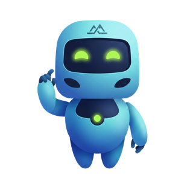

Это приложение теперь живёт по новому адресу — ala-metro.org. Обновите закладку.

Онлайн-расписание — сколько ждать до поезда
Нашли ошибку в расписании или есть идея? Напишите — читаем всё.
Прыгай через препятствия, пока ждёшь поезд.
Тап / пробел — прыжок
Врезался!
Тап — начать заново
![]()
![]()
![]()